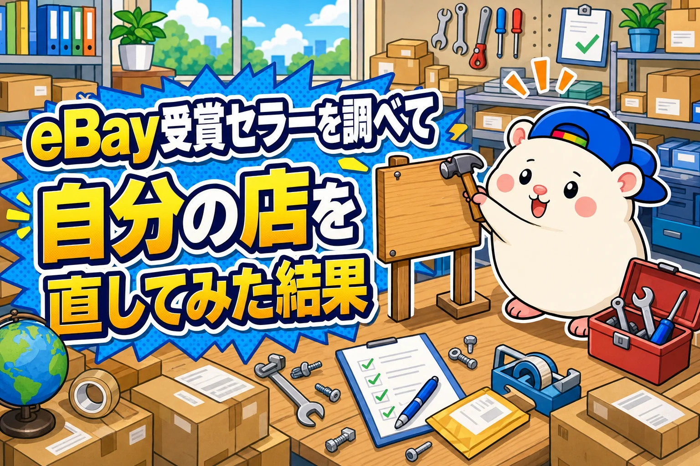
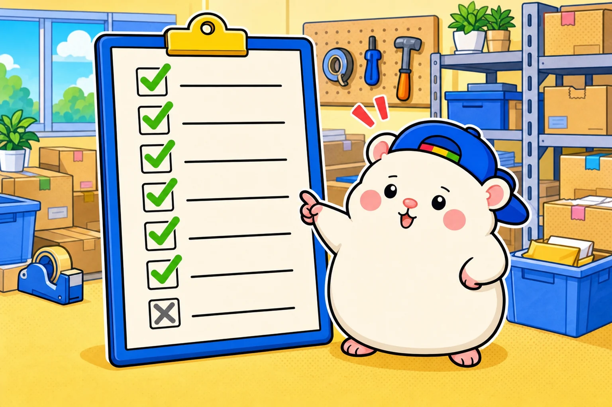

eBayの受賞セラーを7回にわたり調べました。
結果、ぼくの店との違いが7つ見つかりました🐹
調べて終わりにすると、ただの読み物です。
なので、この1週間で自分の店を直しました。
全部、正直に書きます。
▼まとめ: eBay有力セラーを7回調べてみた結果【まとめ】
https://rental-space.net/articles/2026-09-20-ebay-award-seller-summary.html
7つの違い

受賞18店と比べて、違ったのはここでした。
1. Item specifics(商品の項目)が5つで、18店の中でいちばん少ない
2. タイトルの6割に、意味のない「Japan」系の言葉
3. 説明文に、EU向けの関税の一文がない
4. 型番で相場が決まる品なのに、73%の品で値下げ交渉を受けている
5. 説明文に、お店の紹介がない
6. アラスカ・ハワイを外している(受賞20店では3店だけ)
7. 中古なのに写真が8枚、発送が3営業日(受賞店の多くは在庫を持っている)
直したこと①: Item specificsを倍以上に
いちばん大きなずれでした。
受賞店の中央値は12項目。ぼくの店は5項目です。
出品担当とシステム担当に、よく見られている出品から順に直してもらいました。
のべ約1,700件です。
・5.4項目 → 9.8項目(974件)
・7.6項目 → 18.9項目(254件)
決めごとは1つだけ。
中身のある値しか入れない。
推測で埋めると、届いた品と説明がちがう、というトラブルになります。
なので、仕入れ先の商品情報と、メーカー公式の仕様だけを使いました。
公式の仕様は、出典のページを1件ずつ残しています。
新しく出品する品も、最初から同じ作り方で出るようにしました。
直したこと②: タイトルから「Japan」を外す
受賞店で「Japan」をタイトルに入れているのは、日本版であることが選ぶ決め手になる品の店でした。
ぼくの店の品は、そうではありません。
字数を埋めるための、意味のない文字合わせでした。
「タイトルにJapanは入れない」を店のルールにしました。
そのうえで、約1,800件のタイトルを作り直しています。
Japanのかわりに入れたのは、型番や、何に使う品かがわかる言葉です。
9月18日の時点で、Japan系の言葉が入っている品は6割から4割まで減りました。
直したこと③: EU向けの関税の文
10月1日から、EUに送る€150以下の品は、関税込みの配送(DDP)が必須になります。
eBayは「説明文に『関税はバイヤー負担』と書いてあるなら直して」と案内しています。
経理担当に請求書を見てもらうと、配送はもう関税込みになっていました。
8月末から、EU向けの小さな荷物には、関税と手数料が1件1,500円ほど請求されています。
残っていたのは、説明文です。
全6,349件を調べると、89件に「関税は買い手負担」の古い文が残っていました。
その89件から古い文を消して、お客さんに見えるページも全件開いて確かめました。
EU向けの「関税は支払いずみです」の一文は、まず20件だけに入れています。
関税の文は、翻訳されたときにeBayの判定に引っかかったことが、前に3回あるからです。
数日見て、問題がなければ全件に入れます。
直したこと④: 値下げ交渉
受賞店は、型番で相場が決まる品では、値下げ交渉を受けていませんでした。
ぼくの店は73%で受けています。
まず、交渉を自動でOKする金額を全部見直しました。
全6,389件のうち765件で、その金額が「これ以下だと赤字」のラインを下回っていたんです。
値付け担当が直して、毎日自動で見張るようにしてくれました。
ただ、「型番の品は交渉を受けない」までは、まだやっていません。
なので、半分の実施です。
直したこと⑤: お店の紹介と「何かあれば」の一文
受賞店の半分ほどは、説明文にお店の紹介と「何かあれば連絡してください」を入れていました。
ぼくの店には、どちらもありませんでした。
全部の出品の説明文の最後に、この2文を足しました。
About Us: (店名) is a small shop based in Japan. We describe every item honestly, flaws included, and ship worldwide with tracking.
If anything is wrong with your order, let us know and we will make it right.
「日本の小さなお店です。キズも含めて正直に説明して、追跡つきで世界に送ります」
「注文に何か問題があれば知らせてください。きちんと対応します」
という意味です。
じつは最初、「eBayのメッセージで対応します」と書いていました。
でも、店の記録を見直すと、この言い回しにeBayの判定が反応したかもしれない出品がありました。
なので、途中で止めて言い回しを変えています。
新しく出品する品にも、同じ文が入るようにしました。
直したこと⑥: アラスカ・ハワイにも送る
ぼくの店は、アラスカとハワイを配送先から外していました。
受賞20店で外しているのは、3店だけです。
外した理由は、どこにも記録がありませんでした。
最初に配送の設定を作ったときから、そのままだったようです。
そこで、送料計算に使っている料金表で確かめました。
主に使っているFedExは、アラスカ・ハワイでも、アメリカ東部と同じ料金です。
アメリカ西部より1〜2%高いだけでした。
外す理由がなかったので、配送の設定6つから、アラスカとハワイの除外を外しました。
全米の人口の0.6%ほどなので、注文はそんなに増えないと思います。
それでも、送れるのに断る理由はありません。
⑦できないこと: 写真と発送日数
写真を増やすこと。
ぼくの店は無在庫なので、品が手元にありません。
自分で撮れないので、仕入れ先の写真の枚数が上限です。
発送を1日にすること。
1日で送れるのは、品が手元にある店です。
ぼくの店は、売れてから仕入れます。
そのかわり、よく売れる品から有在庫を少しずつはじめています。
どちらも、受賞店と同じにはできません。
できないことを、はっきりさせました。
直す途中で見つかったこと
直しはじめると、別の問題も出てきました。
・メーカー純正ではない品に「純正(Genuine)」と書いていた出品が70件 → 直しました
・eBayのルールで出品できない種類の品が11件、審査をすり抜けて出ていました → 自分で取り下げました
・カテゴリの設定が合っていなくて、どこも直せない出品が1件 → カテゴリを付け直しました
タイトルを直したら、eBayの審査がちゃんと働いて、止めてくれた品もありました。
直すことで、見えていなかったまちがいが見つかりました。
まとめ: 調べた数字は、自分の店に当てはめて使う
□ Item specifics: 5項目 → よく見られている品から、10〜19項目へ
□ タイトル: Japanを外して、型番と用途の言葉へ(約1,800件)
□ EU: 「関税は買い手負担」を0件に。EU向けの一文は20件から
□ 値下げ交渉: 赤字になるOKラインは直した。交渉する品を減らすのはこれから
□ お店の紹介と「何かあれば」の一文: 全件に追加
□ アラスカ・ハワイ: 料金表で確かめて、除外を外した
× 写真・発送日数: 無在庫なので、同じにはできない
どの作業も、いきなり全件には入れていません。
20件だけ直す → 5件を目で見る → 全件、の順です。
全部を一度に変えると、まちがえたときに全部がまちがうからです。
効果は、10月1日に直す前と比べます。
数字が出たら、また書きます。
あなたは、調べたあとに、自分の店をどこか直しましたか?
台帳に書いておこう🐹
▼まとめ: eBay有力セラーを7回調べてみた結果【まとめ】
https://rental-space.net/articles/2026-09-20-ebay-award-seller-summary.html
▼第4弾: eBay有力セラーの商品ページを調べてみた結果
https://rental-space.net/articles/2026-09-17-ebay-award-seller-product-page.html
▼第5弾: eBay有力セラーの説明文を読んでみた結果
https://rental-space.net/articles/2026-09-18-ebay-award-seller-description.html
▼第6弾: eBay有力セラーのタイトルを読んでみた結果
https://rental-space.net/articles/2026-09-18-ebay-award-seller-title.html
▼EU向けDDP必須化の話
https://rental-space.net/articles/2026-09-01-eu-ddp-mandatory.html
▼中の人🏠(レンタルスペース23部屋・売上1.5億)のレンスペ実録
https://note.com/rentalspace_kiku
▼ブログ(eBay×レンスペ、全記事まとめ)
https://rental-space.net
▼この店のやり方は、ぜんぶ1冊にまとめてあります
リサーチ・出品・値付け・顧客対応まで、初月利益10万4,286円を出した実店舗の記録と手順を全部書いた教科書です。
読んだその日から、AI社員の作り方をそのまま真似できます。
『AI × eBay輸出の教科書 — 梱包以外、ぜんぶAI』
https://rental-space.net/kyokasho/ebay/
販売価格は3部売れるごとに2,000円ずつ値上がりします（上限あり）。内容・最新価格は販売ページをご確認ください。